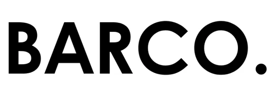
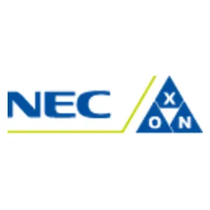
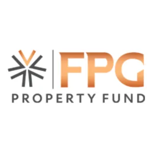
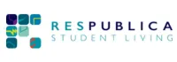
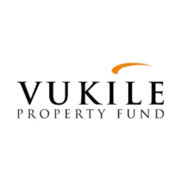
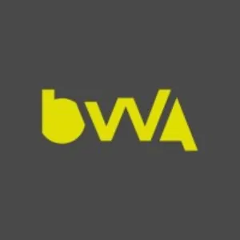

A more complete property delivery brand
Barco Solutions brings together building, maintenance, upgrades, presentation-focused work and project coordination under one broader service identity.

Start your enquiryBARCO SOLUTIONS
Barco Solutions is being positioned as a complete property support brand: building, renovations, maintenance, project coordination and joinery delivered with a stronger concept-to-completion structure. This landing page now brings the company story, client focus, affiliates and team summary together in one welcome experience.
1. Welcome page
Barco Solutions is being presented as a capable property and project brand that can support commercial work, private client work and multi-scope delivery across repair, renovation, finishing and joinery-related projects.
This page is designed to give first-time visitors a quick understanding of who Barco Solutions serves, how the business operates and where future detail pages are expanding next.
Barco Solutions brings together building, maintenance, upgrades, presentation-focused work and project coordination under one broader service identity.
Suitable for property managers, developers, facilities teams, retail environments and commercial clients that need organised execution.
Homeowners and private property clients can use the same structured support for repairs, upgrades, joinery and finish-led improvements.
The site structure now makes room for dedicated joinery, richer case studies, more team detail and later e-commerce or online catalogue additions.
1.2 Our affiliates
This area gives Barco Solutions a place to display affiliated brands, project relationships, supply partners or notable clients. It helps the site feel more established while leaving room for better-curated brand entries later.





1.3 Our team
For now, the site frames the team around practical delivery roles instead of inventing names. Once Eduan sends the real team details, these cards can be updated fast with actual people, roles and photos.
Initial point of contact, scope alignment, planning and commercial communication across the project lifecycle.
Sequencing workstreams, coordinating trades and keeping progress aligned to quality and completion goals.
Hands-on capability across construction support, finishing detail and custom joinery-related work where precision matters.
2. Projects page
This page is shaped to explain what Barco Solutions offers, how projects move forward and what kind of work the company wants to be known for.
Protecting roofs, structures and interiors against leaks, damp and moisture-related deterioration.
Interior and exterior finishes that improve presentation while helping protect the built environment.
Floor upgrades and replacements that improve usability, feel and visual quality across the site.
Site assessments that help clarify problems early and guide the correct next steps with more confidence.
Managing the workstream from concept and preparation through to site delivery and handover.
Detail-led joinery solutions that can be integrated into wider renovation and fit-out work.
2.1 Concept to completion
This section gives Barco Solutions a clearer project diagram so clients can see how work moves from first conversation to finished result.
Understand the site, the problem, the client goal and the type of outcome needed.
Define the service mix, planning needs, timing and priorities before execution begins.
Execute repairs, upgrades, finishes or joinery work with stronger site coordination and visibility.
Review the work, present the finished result and close out the project with clearer handover.
2.2 Project photo gallery
The gallery is intended to grow into a stronger project showcase over time. For now it uses the available Barco visuals to support the new structure and create a more credible project page.
Useful for projects where site condition, finish quality and value uplift all matter.
Painting, flooring and finishing work that visibly improves the property experience.
Structured for sites where the finished result affects both use and overall brand impression.
Ideal for scopes where waterproofing, exterior care and visible improvement need to land together.
2.3 Track record
This section is built to hold stronger stats, case studies and project summaries later. For now it gives the Barco Solutions project page a more complete business story without fabricating detailed claims.
Barco Solutions is positioned around projects that combine practical technical work with visible finish improvement.
The brand direction supports both B2B and B2C work across different types of property environments.
Once more approved project details arrive, this area can expand into deeper case studies and before/after results.
3. Joinery page
The joinery section is intentionally set up as a premium expansion area. Once Eduan shares the similar reference page, the layout and tone can be sharpened to match the exact direction you want.
3.2 Joinery photo gallery
For now this section uses the strongest available Barco visuals while keeping the page ready for a more specific joinery portfolio later.
Visual direction for spaces where crafted details improve both function and atmosphere.
Suitable for later replacement with more explicit joinery project photography and cabinetry examples.
This is also where product-led visuals can sit once the online store or range starts taking shape.
4. Contact page
This contact page is designed to make it easy for residential and commercial clients to ask questions, submit project details and get routed quickly. The AI assistant remains available as the fast first-touch option.
Advanced enquiry form
Fast actions
Phone numbers, email addresses, WhatsApp number, team names, affiliate details and the joinery reference page link.